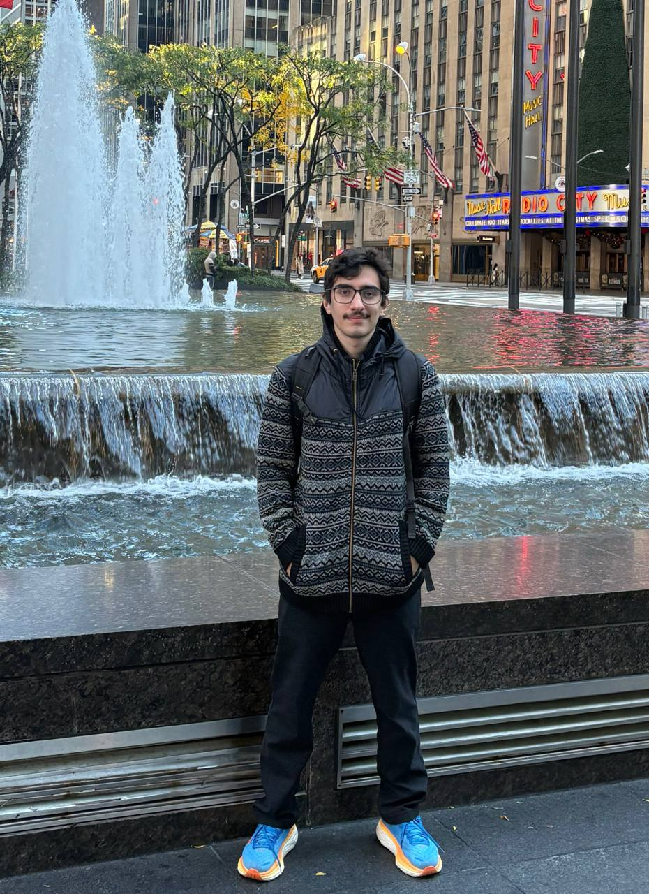

MohammadSajad Alipour
About
I am a PhD student in Computer Science at Rensselaer Polytechnic Institute (RPI). My research focuses on building learning systems that are efficient, modular, and reliable, from low-rank adaptation and compression methods to multi-agent systems and representation learning. I earned my Bachelor’s degree in Computer Engineering from Amirkabir University of Technology.
Research Interests
- Multi-agent Systems
- Model merging
- Causal Representation Learning
- Efficient inference and post-training compression for large language models
- Efficient fine-tuning and alignment
- Data valuation and Coreset selection
Publications
Open-source Projects
Implemented a Persian grapheme-to-phoneme model with a sequence-to-sequence transformer. Trained two variants and evaluated on a test set. Code
Used IPOPT and Pyomo to search for 2×2 matrix multiplication algorithms with 7 scalar multiplications (inspired by AlphaTensor). Code
Built an inverted-index search engine with TF-IDF ranking and optimization techniques, and extended it with Elasticsearch. Code